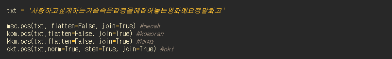
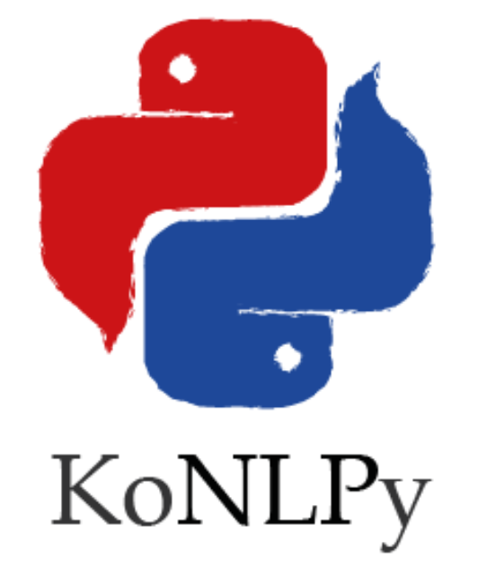

Beautifulsoup와 Selenium을 통해 수집한 데이터를 수치화 하기 위해 명사 추출을 시행합니다.
데이터 명사화를 위해 KoNLPy중 Okt를 사용하였습니다.

Mecab: [[‘사랑/NNG’, ‘하/XSV’, ‘고/EC’, ‘싶/VX’, ‘게/EC’, ‘하/VV’, ‘는/ETM’, ‘가슴속/NNG’, ‘온/VV+ETM’, ‘감정/NNG’, ‘을/JKO’, ‘헤집/VV’, ‘어/EC’, ‘놓/VX’, ‘는/ETM’, ‘영화/NNG’, ‘예요/VCP+EF’, ‘정말/MAG’, ‘최고/NNG’]]
Komoran: [[‘사랑/NNG’, ‘하/XSV’, ‘고/EC’, ‘싶/VX’, ‘게/EC’, ‘하/VX’, ‘는/ETM’, ‘가슴속/NNG’, ‘오/VV’, ‘ㄴ/ETM’, ‘감정/NNP’, ‘을/JKO’, ‘헤집/VV’, ‘어/EC’, ‘놓/VX’, ‘는/ETM’, ‘영화/NNP’, ‘예/NNG’, ‘요정/NNP’, ‘말/NNG’, ‘최고/NNP’]]
Kkma: [[‘사랑/NNG’, ‘하/XSV’, ‘고/ECE’], [‘싶/VXA’, ‘게/ECD’], [‘하/VV’, ‘는/ETD’], [‘가슴속/NNG’], [‘오/VV’, ‘ㄴ/ETD’], [‘감정/NNG’, ‘을/JKO’], [‘헤집/VV’, ‘어/ECD’], [‘놓/VXV’, ‘는/ETD’], [‘영화/NNG’, ‘이/VCP’, ‘에요/EFN’], [‘정말/MAG’], [‘최고/NNG’]]
Okt: [‘사랑/Noun’, ‘하다/Verb’, ‘싶다/Verb’, ‘가슴속/Noun’, ‘온/Noun’, ‘감정/Noun’, ‘을/Josa’, ‘헤집다/Verb’, ‘영화/Noun’, ‘예요/Josa’, ‘정말/Noun’, ‘최고/Noun’]
분석 결과를 보았을 때, 전반적인 느낌으로는 Kkma와 Komoran은 더 구체적으로 형태소에 따라 단어를 쪼개는 것으로 보입니다.
한편, Okt의 경우 다른 분석기들과 미세하게 결과가 다른데요.
Okt는 stem=True, norm=True의 파라미터가 존재해서, 단어들을 알아서 조금 정규화해주고, 오타도 조금 수정해주는 기능이 있습니다.
위와 같이, ‘사랑하고’를 ‘사랑하다’로, ‘싶게’를 ‘싶다’로, ‘헤집어놓는’을 ‘헤집다’로 바꾸었습니다.
from konlpy.tag import Okt
okt = Okt()
okt.nouns(aa[:30])
okt.nouns(ab[:30])
okt.nouns(ac[:30])
